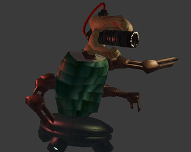

Chthonic Breakout

This project was for my Game Dev 1 class at RPI. Chthonic Breakout is an RTS in which you summon Eldritch horrors to take on the government.
The game features RTS style unit spawning and camera controls, with a fleshed out resource and research system as well as a modular monster generator.
I was the lead programmer in this project and the one responsible for creating the modular monster spawning system. Overall it remains one of my favorite
projects I have ever worked on and one I am quite proud of. Click the thumbnail to go download and play for yourself!
PIXEL PLAGUE

Pixel plague is a wave based horde shoot em up created for my Intro to Game Programming course at RPI.
Using a minigun, the player guns down hordes of zombies, racking up points. This is achieved through a wave manager script that
controls the frequency and quantity of enemies. Powerups drop between waves to keep increasing the strength of the player. Unity's particle
system generator played a large role in the effects of the minigun fire. This coupled with screen shake and some minor lighting
tweaks made the final product.
TOWER JUMPER

Tower Jumper is a rocket jumping platformer also created for my Intro to Game Programming course.
The player wields a bazooka and is able to propel themselves by firing rockets at nearby surfaces. Consistent
phyiscs checks ensure smooth and consistent rocket jumping. Raycasting plays a large part in this project, from
identifying platoform edges in enemy patrolling scripts to turret scripts seeing the player and opening fire.
At the top of the level resides a goal to be reached after some increasingly difficult platforming.
ROGUE LABYRINTH

Rogue Labyrinth was a project I worked on with a few friends in high school. I handled all the programming and unity implementation,
while one of my buddies drew up and animated the sprites and the other worked on the music. The game is a rogue-like dungeon crawler
in which the player clears a randomly generated level, picking up powerups and defeating enemeis while working their way towards the
boss. The random level generation is a modular system which allows for new rooms to be added and worked into the levels.